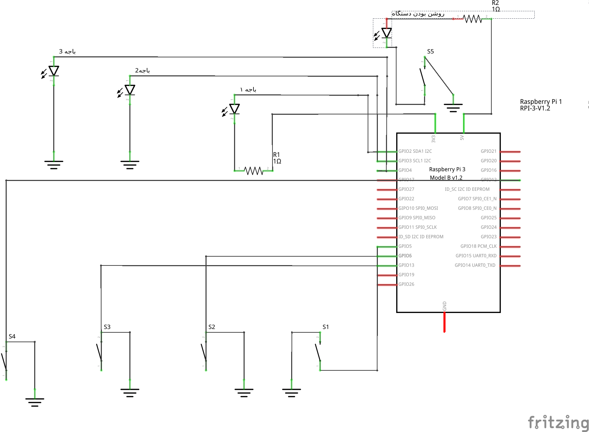

بررسی دستگاه¶
بررسی مدار¶
بررسی کد¶
کتابخوانه ها و کد گذاری فایل
# -*- coding: utf-8 -*-
import random
import pickle
import RPi.GPIO as GPIO
import time
import json,requests
import pygame
from sys import argv
pygame.init()
تابعی برای پخش صدا که ۲ پارامتر میگیرد
اولی برای خواندن شماره کاربر
دومی برای خواندن شماره باجه
def play(n1,n2):
for i in range(0,1):
# داخل پوشه sound فایل حاوی صدا شماره ارسالی به تابع پخش خواهد شد
pygame.mixer.music.load("sound/"+str(n1)+".wav")
pygame.mixer.music.play()
time.sleep(2)
for j in range(0,1):
pygame.mixer.music.load("sound/"+"b1.mp3")
pygame.mixer.music.play()
time.sleep(2)
for k in range(0,1):
pygame.mixer.music.load("sound/"+str(n2)+".wav")
pygame.mixer.music.play()
time.sleep(2)
تابعی برای جلو بردن صف که دو پارامتر میگیرد
اولی برای آدرس سرور است
دومی برای شماره شعبه بانک که دستگاه روی آن در حال اجرا است
def RunQueue(param_ip,param_branch):
print "GoTo RunQueue()"
g = requests.post('http://'+ param_ip +':8088/queue/'+param_branch,json={"bankId":""+ param_branch +""})
#r = requests.get('http://'+ param_ip +':8088/queue/'+param_branch)
try:
print "OK"
data = g.json()
print data
for key in data:
return str(key['active_turns_number'])
except ValueError:
print "Server Not Working"
تابعی برای روشن و خاموش شدن led که یک پارامتر میگیرد
پارامتر برا دادن آدرس led است
def blink(pin):
GPIO.output(pin,GPIO.HIGH)
time.sleep(1)
GPIO.output(pin,GPIO.LOW)
time.sleep(1)
return
تابعی که در شروع برنامه نقش راه اندازی پایه های برد را دارد
def setup():
GPIO.setmode(GPIO.BCM)
GPIO.setwarnings(False)
GPIO.setup(2,GPIO.OUT)
GPIO.setup(3,GPIO.OUT)
GPIO.setup(4,GPIO.OUT)
GPIO.setup(5, GPIO.IN, pull_up_down=GPIO.PUD_UP)
GPIO.setup(6, GPIO.IN, pull_up_down=GPIO.PUD_UP)
GPIO.setup(13, GPIO.IN, pull_up_down=GPIO.PUD_UP)
GPIO.setup(12, GPIO.IN, pull_up_down=GPIO.PUD_UP)
تابعی برای ساخت نام و نام خانوادگی تصادفی
کاربرد آن برای شبیه سازی نوبت دهی حضوری است
def name_family():
foo = ['محمد','مراد','قلی','آرش','حمید','یاسر','مرصاد'\
, 'رضا', 'تقی', 'محمد تقی','احمد','مریم','رضوان','روشنک','مرجان']
secure_random = random.SystemRandom()
return str(secure_random.choice(foo))
تابعی برای ساخت شماره تلفن تصادفی
کاربرد آن برای شبیه سازی نوبت دهی حضوری است
def number():
# create the dict and save it to a file
d={
'part1':[
'0912',
'0921',
'0935',
'0938',],
'part2':[
str(random.randint(1111111,9999999))],
}
f=open('syllables','w')
pickle.dump(d,f)
f.close()
# read the dict back in from the file
f1=open('syllables','r')
sd=pickle.load(f1)
f1.close()
first_part=sd['part1'][random.randint(0,len(sd['part1'])-1)]
second_part=sd['part2'][random.randint(0,len(sd['part2'])-1)]
#print '%s%s'%(first_part,second_part)
return (first_part+second_part)
تابعی برای ساخت کاربر تصادفی که سه پارامتر میگیرد
اولی برای نام کاربر
دومی برای شماره تلفن کاربر
سومی برای آدرس ip سرور است
کاربرد برای شبیه سازی نوبت دهی حضوری
def req(name,number,ip):
url = 'http://'+ ip +':8088/users'
payload = {'name': name,'phone_number':number,'status':'0', "turn_number":"0","password":number,"email":"ali@yahoo.com"}
headers = {'content-type': 'application/json'}
r = requests.post(url, data=json.dumps(payload), headers=headers)
print(r.status_code, r.reason)
تابعی برای دریافت پارامتر های ارسالی در موقع برنامه است که یک پارامتر میگیرد
پارامتر برای دادن ورودی های ارسالی به تابع و جدا سازی آن است
def getopts(argv):
opts = {} # Empty dictionary to store key-value pairs.
while argv: # While there are arguments left to parse...
if argv[0][0] == '-': # Found a "-name value" pair.
opts[argv[0]] = argv[1] # Add key and value to the dictionary.
argv = argv[1:] # Reduce the argument list by copying it starting from index 1.
return opts
قسمت اصلی برنامه
if __name__ == "__main__":
setup()
param_ip = ''
param_branch = ''
myargs = getopts(argv)
# دریافت پارامتر کد شعبه
if '-branch' in myargs: # Example usage.
param_branch = str(myargs['-branch'])
# دریافت پارامتر آدرس ip
if '-ip' in myargs: # Example usage.
param_ip = str(myargs['-ip'])
print param_ip
else:
print '''
-ip for connect node ip
-branch for find node branch
'''
quit()
if '-h' in myargs:
print '''
-ip for connect node ip
-branch for find node branch
'''
quit()
# تا موقعی که برنامه در حال اجرا است منتظر فشردن دکمها می ماند
while True:
# دکمه ۱
bt1 = GPIO.input(5)
if bt1 == False:
print('B1')
# جلو بردن صف به آدرس سرور و کد شعبه
q = RunQueue(param_ip,param_branch)
# پخش صدا حاوی نوبت کاربر و شماره باجه
play(int(q),1)
for i in range(0,5):
# خاموش و روشن شدن led
blink(2)
time.sleep(0.2)
bt2 = GPIO.input(6)
if bt2 == False:
print('B2')
q = RunQueue(param_ip,param_branch)
play(int(q),2)
for i in range(0,5):
blink(3)
time.sleep(0.2)
bt3 = GPIO.input(13)
if bt3 == False:
print('B3')
q = RunQueue(param_ip,param_branch)
play(int(q),3)
for i in range(0,5):
blink(4)
time.sleep(0.2)
bt4 = GPIO.input(12)
# دکه ۴ یا نوبت دهی حضوری
if bt4 == False:
print('B4')
# ساخت نام و نام خانوادگی تصادفی
name = name_family()
# ساخت شماره تلفن تصادفی
numberr = number()
# ارسال درخواست ثبت کاربر
req(name,numberr,param_ip)
r = requests.get('http://'+param_ip+':8088/users/'+str(numberr))
data = r.json()
for key in data:
id = key['user_id']
break
# اضافه شدن کاربر به ته صف نوبت ها
r = requests.post('http://'+param_ip+':8088/addqueue/'+param_branch+'/'+id, json={"key": "value"})